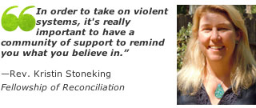

Friends,
As we honor Rev. Dr. Martin Luther King, Jr. this coming Monday, I wanted to share with you a compelling radio program exploring the spirituality of nonviolence, featuring FOR-USA Executive Director Rev. Kristin Stoneking.
The spirituality of nonviolence
Listen to the radio segment featuring Rev. Stoneking online. If you'd like to skip directly to Kristin's segment, she begins speaking at about the 7-minute mark.
Rev. Kristin Stoneking tells the story of growing up in a Methodist Mennonite congregation, a "peace church." Her father was a pastor in Kansas City. The family practiced three dimensions of Gandhian nonviolence: personal transformation, spiritual transformation and social action. Today Kristin is Executive Director of the Fellowship of Reconciliation, an interfaith pacifist organization founded just prior to WW1, which popularized the adage: "There is no way to peace, peace is the way."
The radio program also features interviews with Episcopal priest Charles Gibbs, Quaker author Eileen Flanagan, Tikkun editor Rabbi Michael Lerner, and Sufi sage M.R. Bawa Muhaiyaddeen.
Listen to "The Spirituality of Nonviolence" -- and share with your networks as we mark Dr. King's work.
This segment is a part of the NPR-affiliated program "Humankind: Voices of Hope and Humanity" produced by David Freudberg. You can listen to their entire series on nonviolence, including remarks from Gwendolyn Zoharah Simmons on the connections between Jesus' nonviolence, Dr. King and African American Christianity in the wake of the attack on a black South Carolina church; Brother Dennis Gibbs, who works as a prison chaplain in compassion training; and Buddhist meditation teacher Jack Kornfield on de-escalating interpersonal and internal strife with respect and peace.
In peace,
 Linda E. Kelly Linda E. Kelly
Director of Communications
Fellowship of Reconciliation
|